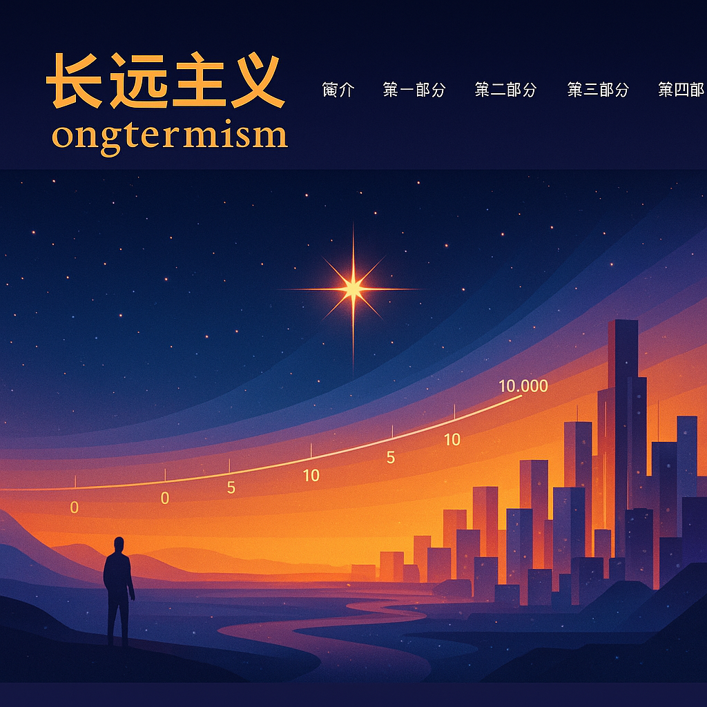

Present Action for the Distant Future
在历史的长河中，我们个人的生命只是短暂的一瞬，然而我们的行为可能在未来的数千年乃至数百万年间持续发挥影响【10568911847981†L552-L558】。
“长远主义”这一概念认为，数千乃至数十亿年以后的遥远未来对于今天的决策具有重要意义【10568911847981†L559-L563】。它包含几个要素：远期痛苦和幸福的重要性不因时间而折扣；我们可以通过当前行动实质性影响未来的幸福与受益主体数量；我们拥有足够的知识评估这些影响；因此我们有强烈的道德理由采取能够积极引导远期未来的行为【10568911847981†L565-L583】。
许多学者强调新兴技术引发的灭绝风险，但减轻这些风险只是改善远期未来的众多方法之一【10568911847981†L584-L607】。
作者们还强调需要区分弱长远主义和强长远主义，以及价值论和义务论的不同方向：弱长远主义只是指出远期未来的重要性；强长远主义则认为远期未来应占据我们的核心道德优先；价值论关注什么行为能带来更好的结果，而义务论关注在道义上我们应当做什么【10568911847981†L659-L678】。

图：艺术化的未来城市，象征对远期未来的想象
本书共分为四个部分：第一部分评估长远主义的立论，第二部分探讨预测和评估远期未来的挑战，第三部分讨论伦理优先事项，第四部分则关注制度与社会。下面的柱状图展示了各部分包含的章节数量。
移动滑块，可查看四部分的中文概述：